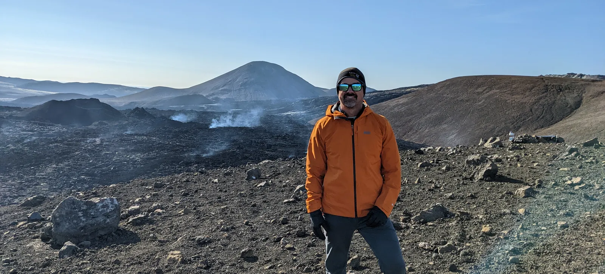
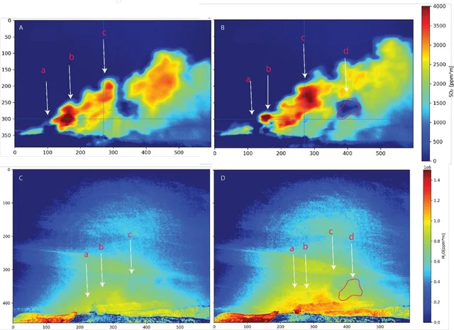
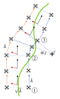
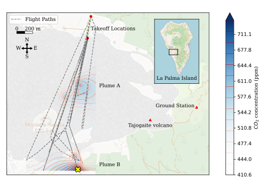
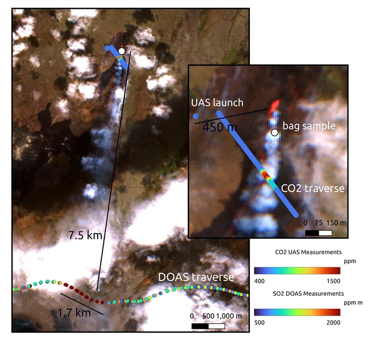
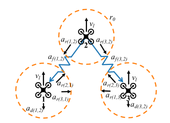
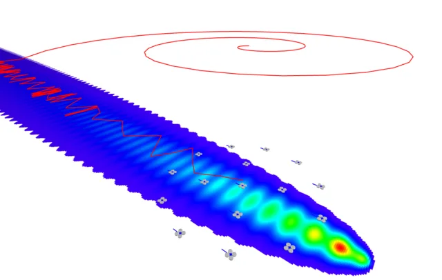
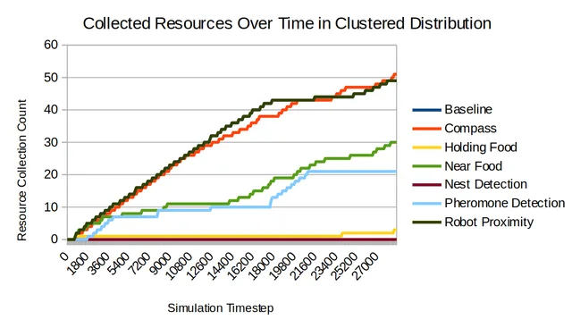

I'm a Software Engineer at Honeywell. I'm also a co-founder and the Lead Engineer of CarbonSwarm, a spinoff of my Ph.D. research that deploys coordinated drone swarms and custom sensor payloads to pinpoint gas leaks such as methane in remote and hazardous environments, and the Director of Software at Avelo Labs, where we design human-centered diving systems.
I earned my Ph.D. in Computer Science at the University of New Mexico with the Moses Biological Computation Lab, building swarms of flying robots that measure volcanic gas emissions. That work has taken our drones into the plumes of the 2021 Tajogaite eruption on La Palma and the 2023 Litli Hrútur eruption in Iceland. My research has also spanned software architecture, evolutionary complex systems, and intelligent swarm robotics.
Outside of work, I'm an avid scuba diver and photographer who specializes in underwater photography. I also enjoy contributing to and collaborating on a handful of open source projects.
Water vapor dominates volcanic gas emissions, yet accurate H2O flux measurements remain challenging. We developed a multi-band near-infrared camera system, calibrated with an in-situ Multi-GAS instrument, to quantify volcanic H2O flux, and tested it at the passively degassing Lascar volcano in Chile and the actively erupting Litli Hrútur eruption in Iceland. Simultaneous camera, miniDOAS, and UV camera deployments show that H2O and SO2 emissions vary independently, demonstrating that direct measurements of each major gas are essential for accurate volatile budgets.
MLA: Rojas Vilches, Felipe, et al. "Water Vapor Detection in Volcanic Plumes: Near-Infrared Cameras applications at Lascar, Chile, and Litli Hrútur, Iceland." EGUsphere, 2026. Preprint.
Volcanic systems are inherently complex, involving dynamic interactions among magma flow, gas emissions, and atmospheric dispersion. This dissertation develops and analyzes autonomous UAS algorithms for efficiently surveying volcanic CO2 plumes, introducing several novel methods: the LoCUS algorithm, a swarm coordination and self-healing algorithm that supports gradient-based plume tracking; a transect-based technique that employs a 2D Gaussian fit to calculate CO2 plume flux; and the Sketch algorithm for rapid plume boundary tracing. By treating multiple UAS as a single scientific instrument, these methods use in-situ data in ways impossible with individual drones. Validated through simulations and field experiments at the Valles Caldera supervolcano in New Mexico and the Tajogaite eruption on La Palma, these techniques find plume sources, calculate maximum CO2 plume flux, and map plume areas while mitigating operational risks.
MLA: Ericksen, John. Aerial Robotic Studies of Volcanic CO2 Emissions. 2025. University of New Mexico, PhD dissertation.We present the implementation and validation of Sketch, an algorithm that uses two Unpiloted Aerial Systems (UASs) to trace the boundary of volcanic plumes. Sketch guarantees asymptotically optimal flight distance and turning by maintaining a sandwich invariant, where one UAS stays inside the CO2 plume boundary and the other stays outside. We implement Sketch on the Dragonfly drone and evaluate it in physics-based simulation and outdoor flights with virtual plumes. Compared to the single-UAS Zigzag baseline, Sketch achieves shorter flight paths, less turning, and faster mapping times.
MLA: Ericksen, John, et al. "Navigating the Edge: UAS Boundary Tracing for Efficient Volcanic Plume Monitoring." 2024 IEEE International Symposium on Safety, Security, and Rescue Robotics (SSRR), IEEE, 2024, pp. 52-57.
We report in-plume carbon dioxide concentrations and carbon isotope ratios during the 2021 eruption of Tajogaite volcano on La Palma, Spain. Traditional ground-based CO2 collection is difficult and dangerous, and only about 5% of volcanoes have been directly surveyed. We demonstrate that unpiloted aerial system surveys allow for fast and relatively safe measurements, estimate the total CO2 flux during several flights in November 2021, and find carbon isotope ratios that indicate a deep magmatic source.
MLA: Ericksen, John, et al. "Drone CO2 measurements during the Tajogaite volcanic eruption." Atmospheric Measurement Techniques, vol. 17, no. 15, 2024, pp. 4725-36.
We report CO2 emission rates and plume δ13C during the July 2023 eruption at Litli Hrútur in the Fagradalsfjall region of the Reykjanes Peninsula. Emission rates were measured by UAV using a new data extrapolation method that gives rapid flux results for dynamic eruption plumes. Rapid, real-time CO2 flux measurements coupled with isotopic samples collected at the same time provide key insights into eruption dynamics and have the potential to forecast the end of activity.
MLA: Fischer, Tobias P., et al. "CO2 emissions during the 2023 Litli Hrútur eruption in Reykjanes, Iceland: δ13C tracks magma degassing." Bulletin of Volcanology, vol. 86, no. 6, 2024, article 60.
We present methods for autonomous collaborative surveying of volcanic CO2 emissions using aerial robots. CO2 is a useful predictor of volcanic eruptions and an influential greenhouse gas. However, current CO2 mapping methods are hazardous and inefficient, as a result, only a small fraction of CO2 emitting volcanoes have been surveyed. We develop algorithms and a platform to measure volcanic CO2 emissions. The Dragonfly Unpiloted Aerial Vehicle (UAV) platform is capable of long-duration CO2 collection flights in harsh environments. We implement two survey algorithms on teams of Dragonfly robots and demonstrate that they effectively map gas emissions and locate the highest gas concentrations. Our experiments culminate in a successful field test of collaborative rasterization and gradient descent algorithms in a challenging real-world environment at the edge of the Valles Caldera supervolcano. Both algorithms treat multiple flocking UAVs as a distributed flexible instrument. Simultaneous sensing in multiple UAVs gives scientists greater confidence in estimates of gas concentrations and the locations of sources of those emissions. These methods are also applicable to a range of other airborne concentration mapping tasks, such as pipeline leak detection and contaminant localization.
MLA: Ericksen, John, et al. "Aerial Survey Robotics in Extreme Environments: Mapping Volcanic CO2 Emissions With Flocking UAVs." Frontiers in Control Engineering, vol. 3, 2022, article 836720.
In this review we highlight bio-inspired and self-organizing approaches to swarm foraging and contrast them with approaches that can provide theoretical proofs, but which abstract away important features from foraging in real-world environments.
MLA: Lu, Qi, et al. "Swarm Foraging Review: Closing the Gap Between Proof and Practice." Current Robotics Reports, vol. 1, no. 4, 2020, pp. 215-25.Measurement of volcanic CO2 flux by a drone swarm poses special challenges. Drones must be able to follow gas concentration gradients while tolerating frequent drone loss. We present the LoCUS algorithm as a solution to this problem and prove its robustness. LoCUS relies on swarm coordination and self-healing to solve the task. As a point of contrast we also implement the MoBS algorithm, derived from previously published work, which allows drones to solve the task independently. We compare the effectiveness of these algorithms using drone simulations, and find that LoCUS provides a reliable and efficient solution to the volcano survey problem. Further, the novel data structures and algorithms underpinning LoCUS have application in other areas of fault-tolerant algorithm research.
MLA: Ericksen, John, et al. "LoCUS: A multi-robot loss-tolerant algorithm for surveying volcanic plumes." 2020 Fourth IEEE International Conference on Robotic Computing (IRC), IEEE, 2020, pp. 113-20.
In this paper, we perform an ablation study of NeatFA, a neuro-evolved foraging algorithm that has recently been shown to forage efficiently under different resource distributions. Through selective disabling of input signals, we identify a sufficiently minimal set of input features that contribute the most towards determining search trajectories which favor high resource collection rates. Our experiments reveal that, independent of how the resources are distributed in the arena, the signals involved in imparting the controller the ability to switch from searching of resources to transporting them back to the nest are the most critical. Additionally, we find that pheromones play a key role in boosting performance of the controller by providing signals for informed locomotion in search for unforaged resources.
MLA: Ericksen, John, et al. "On the Minimal Set of Inputs Required for Efficient Neuro-Evolved Foraging." arXiv, 2019, arXiv:1911.11974. Preprint.
This paper focuses on the problem of swarm foraging, proposing an automated method for designing scalable controllers that can perform effectively in multiple foraging environments. We use Neuroevolution of Augmented Topologies (NEAT) to design a neural network controller for a swarm of homogeneous robots. Our system, called NeatFA (NEAT Foraging Algorithm), is compared to existing swarm foraging algorithms...
MLA: Ericksen, John, et al. "Automatically evolving a general controller for robot swarms." 2017 IEEE Symposium Series on Computational Intelligence (SSCI), IEEE, 2017, pp. 1-8.In this thesis, we examine the approach of a metaprogramming tool named Transfuse. Transfuse targets boilerplate reduction within the constraints prescribed by the Android environment. This is accomplished through compile-time analysis and code generation. This approach is analyzed from both boilerplate reduction and run-time performance perspectives.
MLA: Ericksen, John. Transfuse: A Compile-Time Metaprogramming Solution for Reducing Boilerplate on Google's Android. 2016. University of New Mexico, Master's thesis.
Parceler is an Android code generation library used to generate implementations of the Parcelable interface.
Implementing this interface is fraught with boilerplate, including defining a public static final CREATOR field and writeToParcel() and createFromParcel().
With Parceler you simply annotate a POJO with @Parcel and Parceler does the rest.
Transfuse is a Java Dependency Injection (DI) and integration library geared specifically for the Google Android API. Transfuse allows you to write Android applications in a composed style following composition over inheritance by breaking you out of the inheritance heavy Android API.
Traditionally, Javadocs have mixed minor markup with HTML which, if you’re writing for HTML Javadoc output, becomes unreadable and hard to write over time. This is where lightweight markup languages like AsciiDoc thrive. AsciiDoc straddles the line between readable markup and beautifully rendered content. Asciidoclet incorporates an AsciiDoc renderer (Asciidoctor via the Asciidoctor Java integration library) into a simple Doclet that enables AsciiDoc formatting within Javadoc comments and tags.
Thermoduino is the output of some tinkering with writing my own thermostat with the goal of controlling my house's temperature from multiple rooms over the day (bedroom for night and living room for day for instance). In the end, I never added the relay to control a thermostat in my home. What I did do is network 3 Arduinos using XBee wireless mesh network devices to gather the temperatures from the kitchen, office, and living room, then tweet the temperature of a randomly chosen room every 3 hours.
In this Alert Diver article about diving Big Sur in California, I was the dive buddy and there's a picture of me modeling above a pinnacle of Strawberry Anemones and Metridium.
This article in No Fluff Just Stuff the magazine presents Asciidoclet, a lightweight markup alternative to traditional Javadoc.